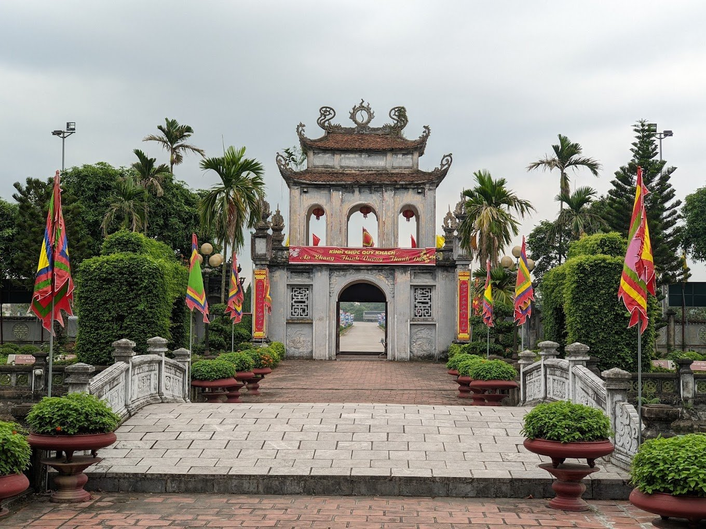
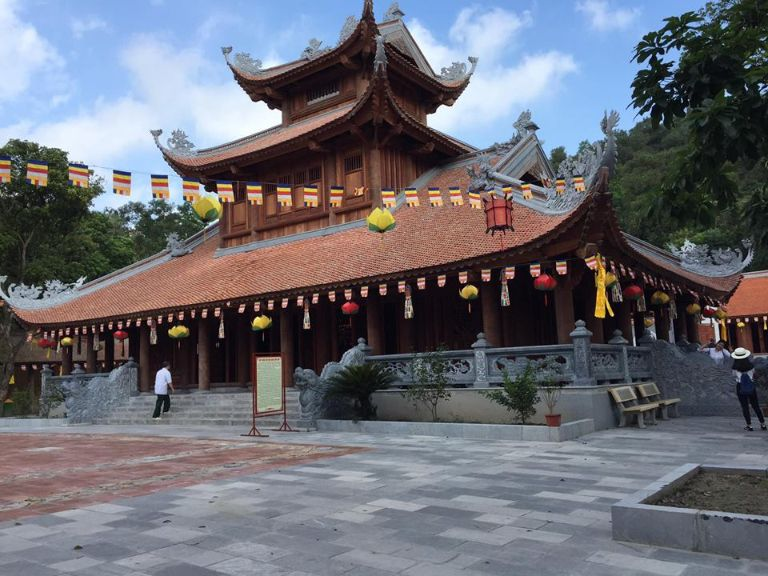
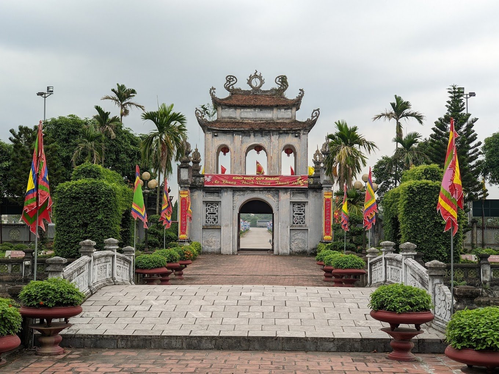
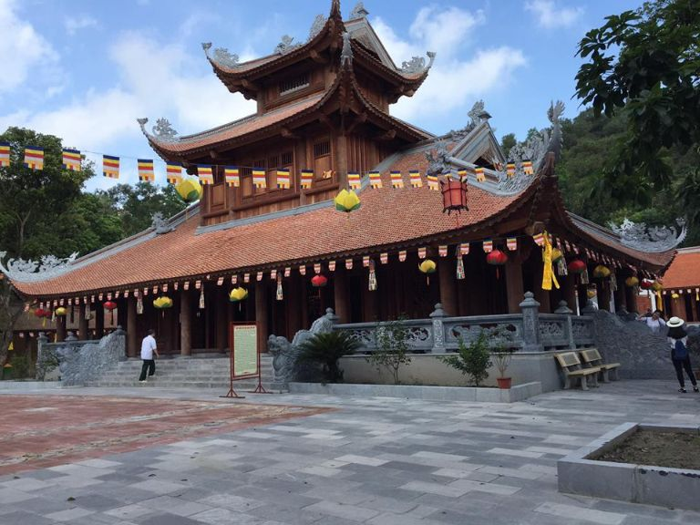

Văn hóa/Lịch sử
Ẩm thực: Nổi tiếng với nhiều món ẩm thực ngon và đặc sắc. Dưới đây là một số món ăn truyền thống của tỉnh Hải Dương: Bún dọc mùng, Nem chua, Bánh đậu xanh, Chả cá Hải Dương.
Công trình, kiến trúc: Hiện nay, Hải Dương không có nhiều công trình kiến trúc nổi bật như một số thành phố lớn khác ở Việt Nam. Tuy nhiên, trong thành phố này vẫn có những công trình kiến trúc đáng chú ý như: Nhà thờ Giáo Xứ Hải Dương, Đền Kiếp Bạc, Cầu Tranh Thủy,..
Văn hóa Phản ánh đậm nét bản sắc vùng đất này, nơi đất trời hội tụ giữa sự pha trộn của văn hóa dân tộc Kinh, Hoa, và Khinh, tạo nên sự đa dạng và phong phú. Văn hóa ẩm thực nổi tiếng với những món ngon đặc sản như bánh đậu xanh, bánh đậu xanh nước đường, mắm đen, bún mắm, gà lên men, ra khủng, bánh cuốn Thanh Hà... Ngoài ra, nghệ thuật truyền thống của Hải Dương cũng rất đa dạng và phong phú, từ những vở chèo, nhạc cải lương, đến hát dân ca, hát quan họ, hát xoan... Văn hóa Hải Dương còn biểu hiện qua các nghề truyền thống như nghề dệt, nghề thêu, nghề đúc đồng, nghề làm gốm sứ... Các loại hình hội họa, điêu khắc, sân khấu, vũ khí truyền thống, trải qua hàng trăm năm vẫn được duy trì và phát triển. Không chỉ thế, Hải Dương còn có nhiều lễ hội truyền thống như lễ hội An Sinh, lễ hội Đình Lệ, lễ hội Phú Giỏi, lễ hội Thất tịch... là dịp để người dân trải nghiệm và kỷ niệm truyền thống của địa phương. Điều này cho thấy sự rộng lớn và đa dạng của văn hóa Hải Dương, làm nên điểm nhấn đặc biệt cho vùng đất này.

 


